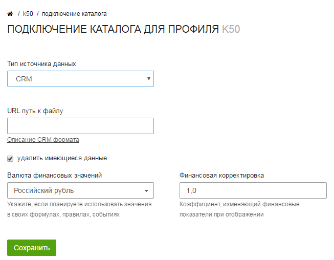

Интеграция с произвольной CRM
Вы можете передавать любые данные из произвольной CRM системы в К50:Оптимизатор. Они позволят вам проводить более детальный анализ рекламных кампаний с помощью статистики.
Составление CSV файла
Для подключения CRM системы к К50:Оптимизатору вам необходимо сгенерировать выгрузку заказов и предоставить нам доступ по ссылке. Выгрузка должна удовлетворять следующим требованиям:
Формат фида
Формат файла - CSV
Разделитель - ;
Кодировка - UTF-8
Файл должен быть доступен через URL по FTP\WWW протоколам.
Название заголовков файла
Жирным отмечены обязательные поля
| Заголовок | Описание |
|---|---|
| date | Дата заказа в формате ГГГГ-ММ-ДД (2014-12-02) |
| orderId | Идентификатор заказа в системе crm клиента в формате integer |
| referrer | Полный реферер посещения |
| landing | Страница входа со всеми метками |
| amount | Суммарное количество товаров в заказе |
| margin | Суммарная прибыль(маржа) с заказа |
| revenue | Суммарная стоимость заказа |
| goodsInOrder | Идентификаторы уникальных товаров в заказе через , |
| goodsQuantityInOrder | Количество каждого уникального товара в заказе через , |
| goodsPriceInOrder | Стоимость каждого уникального товара в заказе через , |
| goodsMarginInOrder | Маржа с каждого уникального товара в заказе через , |
| trackCode | Идентификатор сеанса в формате integer. Используется в случаях, когда с заказом ассоциировано несколько посещений. |
| goal_1 | Произвольный параметр в формате integer. |
| goal_2 | Произвольный параметр в формате integer. |
| goal_3 | Произвольный параметр в формате integer. |
| goal_4 | Произвольный параметр в формате integer. |
| goal_5 | Произвольный параметр в формате integer. |
Обратите внимание
CSV-файл должен обновляться на вашей стороне. При этом, если при обновлении сохраняются уже загруженные в оптимизатор заказы, их идентификаторы не должны изменяться. В противном случае возможно задваивание заказов при импорте.
Подключение к Оптимизатору
Подключение к Оптимизатору осуществляется через подключение Учета звонков и заказов

При подключении необходимо выбрать CRM в качестве типа источника данных и указать ссылку на файл с данными для импорта.

После сохранения настроек начнётся загрузка данных.
Подключение CSV файла через Google Drive
Вы можете вручную загрузить CSV файл в оптимизатор с помощью Google Drive.
Для этого вам необходимо:
- Загрузить файл в Google Drive
- Предоставить доступ на просмотр файла по ссылке
-
Запомнить идентификатор файла. Его можно найти в URL после
/d/и до следующего подкаталога. Пример:
https://drive.google.com/file/d/1B_CoIDTftzX7T0xVcmExR1l3Y0U/view?usp=sharing -
Сформировать URL с использованием получаенного идентификатора по шаблону:
https://drive.google.com/uc?export=download&confirm=no_antivirus&id=идентификаторCSVфайла&authuser=0